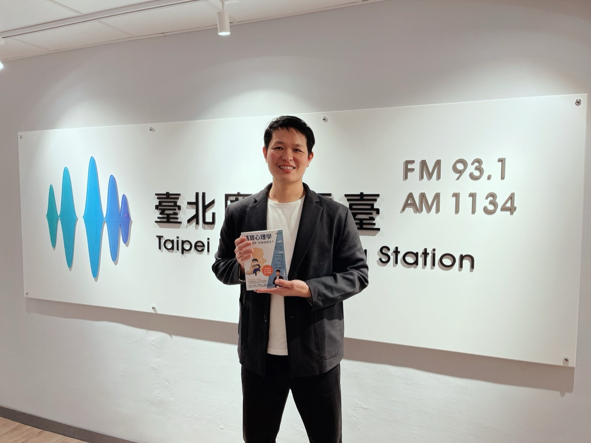

關於我

我是王家齊，臨床心理師。
一半的時間在台北的大心診所做心理治療，一半的時間做專業訓練。
這兩件事看起來不太一樣，但對我來說是同一件 —— 都在處理「兩個人之間，此刻正在發生什麼」。
在診所
專長是人際溝通分析與創傷情緒治療。
實際接的多半是關係裡走不過去的地方：失戀之後的調適、外遇之後的收拾、伴侶之間反覆卡住的同一場爭吵。也接情緒勒索、職場政治，以及親子之間那些說不出口的。
在教室
訓練的目標是讓臨床能力真的長出來，而不是記得更多理論。所以重點不是講，是練 —— 反覆演練、現場回饋，然後再做一次。
累積下來超過 500 場應用即興劇工作坊，橫跨學校、醫院與企業。也首創把即興劇應用在心理治療師專業訓練的課程：《場構進階實作》、《線上整合式實務團督：演練專班》。
我差點放棄即興劇
我不是一開始就適合這個。
剛開始只是單純享受每週一次的練習。但課程越進階，夥伴越來越厲害，我開始懷疑自己 —— 我會不會拖累大家？我真的適合即興嗎？
有一次我站在教室門口，躊躇了二十分鐘。
一個聲音說：回家吧，反正沒人會注意你沒來。 另一個聲音說：再給自己一次機會，就一次。真的不行，再放棄也不遲。
我推開了那扇門。
多年後，2015 年，我到加拿大卡加利參加國際即興劇工作坊。輪到我上場，眾人注視之下，我的腦袋一片空白，一個字都說不出來。
那一刻我以為自己完了。
然後七十多歲的 Keith Johnstone 對我舉起雙手，大喊：
Again!
那一聲接住了我。
我突然明白，即興不是逼你表現完美，而是讓你一次又一次地回到當下。
這件事後來成了我做治療的底層 —— 也是〈Again —— 重來，而不是檢討〉那篇文章在講的東西。
著作
- 《教學即興力》（商周出版）—— 全台灣第一本把即興劇應用於教育訓練的工具書
- 《媽寶心理學》
- 《把天聊死，不如把愛聊活》
後兩本談的是同一件事：男人為什麼開不了口。 吵架之後說不清楚自己在想什麼，或者總在壓抑與暴怒之間來回，直到伴侶下了最後通牒才走進諮商室。這個題目我還在寫。
專欄與講座
媒體訪談
- 台北市心衛中心 × 嘟嘟人 The DoDo Men 【男人的情緒心理學】
- 台北市心衛中心 × 霸軒 【男性的心理健康】
- 白癡公主 【劈腿、偷吃與外遇的心理學】
- 《POP 最正點》林書煒專訪 【媽寶心理學】
- 《生活芳程式》王月芳專訪 【失戀、分手後的自我調適】
認證
2025 年取得：
- Levers of Transfer Effectiveness® Certified Transfer Designer（學習移轉設計）
- **Accelerated Learning（AL）**加速式學習課程引導師／設計師
關於這個網站
這裡是筆記，不是課程介紹。
把即興劇的原則放進治療室之後，有些東西值得慢慢寫下來 —— 不是為了推廣，是為了把想法整理清楚。所以這裡的文章比較短、比較個人，也比較願意講那些還沒想通的部分。
課程資訊、完整文章庫與報名管道在我的主要網站：
想知道「這堂課教什麼、什麼時候開」，去那邊。想知道「這個人到底怎麼想」，留在這裡。